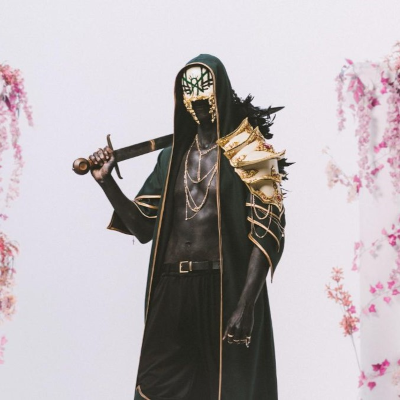

Youtube
Youtube
Sleep Token é uma banda britânica de rock, formada em 2016 em Londres, Inglaterra. O grupo é um coletivo mascarado anônimo liderado por um frontman apelidado de Vessel. Eles foram categorizados em muitos gêneros diferentes, incluindo metal alternativo, metalcore, post-rock/metal, metal progressivo e indie rock/pop.
Você pode acompanhar eles nas seguintes redes:
Bastar clicar no ìcone e você será mandado para lá.
Youtube
 Instagram
Instagram
 Twitter
Twitter